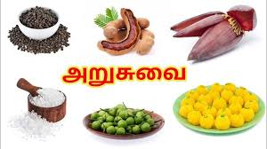

தமிழர் சமையல் (உணவுண்ணும் வழக்கங்கள்)

தமிழர் சமையல்
தமிழர் சமையல், பல நூற்றாண்டுகளாக தென் இந்தியா, இலங்கை மற்றும் பிற நாடுகளில் வசிக்கும்
தமிழர்களால் வளர்த்தெடுக்கப்பட்ட, உலகின் சிறந்த சமையல்களில் ஒன்றாகும். இயற்கையுடனும்
காலநிலைகளுடனும் இணைந்த ஒரு கிராமிய சூழலிலேயே இச்சமையல் வளர்ந்தது. பலவகை உணவுகளைச் சுவையுடன்
சமைக்க விருந்தோம்ப தமிழர் சமையற்கலை வழி சொல்கின்றது.
பல்வகை மரக்கறிகள் (காய்கறிகள்), சுவையூட்டும் நறுமணம் தரும் பலசரக்குகள், கடலுணவுகள் தமிழர்
சமையலில் இன்றியமையா இடம் பெறுகின்றன. சோறும் கறியும் தமிழரின் முதன்மை உணவாகும். கறிகளில்
பலவகையுண்டு; எடுத்துக்காட்டுக்கு, மரக்கறிக் குழம்பு, பருப்பு, கீரை, வறை, மசியல், மீன் கறி என்பன.
பொதுவாக, தமிழர் உணவுகள் காரம் மிகுந்தவை. தேங்காய், மிளகாய், கறிவேப்பிலை, வெங்காயம், உள்ளி, இஞ்சி
உட்பட பல்வகை பலசரக்குகள் கறிகளுக்கும் பிற பக்க உணவுகளுக்கும் சேர்க்கப்படுவது வழக்கம்.
வரலாறு
பழந்தமிழ் இலக்கியத்தில் உணவு சமைக்கும் முறைகளைக் கூறும் நூல் மடை நூல் என அழைக்கப்படுகிறது. அதனைப் பற்றிய செய்திகள் சிறுபாணாற்றுப்படை, மணிமேகலை, பெருங்கதை முதலிய நூல்களில் கூறப்படுகின்றன. காலத்திற்கும், நிலத்துக்கும் ஏற்ற உணவுகளை அந்நூல்களில் அறிந்து கொள்ளலாம். சீவக சிந்தாமணியில் முத்தியிலம்பகத்தில் இருது நுகர்வு என்னும் பகுதியில் சில பெரும்பொழுதிற்குரிய[1] உணவு வகைகள் கூறப்பட்டுள்ளன

பண்டைய தமிழரின் உணவு
தமிழ் இலக்கிய ஆதாரங்களைக் கொண்டு அ. தட்சிணாமூர்த்தி தனது தமிழர் நாகரிகமும் பண்பாடும் என்ற நூலில்
"பண்டைய தமிழரின் உணவு" பற்றி குறிப்புகள் தந்துள்ளார். வாழ்ந்த நிலத்துக்கேற்பவும்
குலத்துக்கேற்பவும் பண்டைய தமிழரிடையே உணவுகள் வேறுபடுகின்றன. எனினும், அனேக தமிழர்கள் சோறும்,
மரக்கறியும், புலாலுணவும், மதுவும் விரும்பியுண்டனர் என்பது தெரிகின்றது. நெற்சோறு, வரகுச்சோறு,
வெண்ணற்சோறு, நண்டுக் கறி, உடும்புக் கறி, வரால்மீன் குழம்பு, கோழியிறைச்சி வற்றல், பன்றியிறைச்சி,
முயல், ஈயல், மாங்கனிச் சாறு, மாதுளங்காய்-மிளகுப்பொடி-கறிவேப்பிலை பொரியல், ஊறுகாய் என
தமிழ்நாட்டில் வாழ்ந்த பலதரப்பட்டோர் உண்ட உணவுகளை தமிழ் இலக்கிய சான்றுகளோடு அ. தட்சிணாமூர்த்தி
விவரிக்கின்றார்.
"கடுகு இட்டுக் காய்கறிகளை தாளிப்பது", "பசு வெண்ணையில் பொரிப்பது", "முளிதயிர் பிசைந்து தயிர்க்
குழம்பு வைப்பது", கூழைத் "தட்டுப் பிழாவில் ஊற்றி உலர வைப்பது", "மோரில் ஈயலை ஊறப் போட்டு
புளிக்கறி சமைப்பது" போன்ற பழந்தமிழர் சமையல் வழி முறைகளையும் அ. தட்சிணாமூர்த்தி சுட்டியுள்ளார்.
மேலும், தென்னைக் கள்ளு, பனங்கள்ளு, வீட்டில் சமைத்த "தோப்பி" என்ற ஒரு வகைக் கள்ளு ஆகியவற்றைப்
பழந்தமிழர்கள் விரும்பி உண்டனர் என்கிறார்.
"பார்ப்பார் சங்க நாளில் புலால் உண்டார் என்றுகோடல் சரியன்று" என்று அ. தட்சிணாமூர்த்தி
சுட்டியுள்ளதும் இங்கு குறிப்பிடத் தக்கது.
உணவுண்ணும் வழக்கங்கள்
தமிழர்கள் கைகளை நீரில் கழுவிய பின்னர், ஒரு கையினால் (பொதுவாக வலதுகை) உணவு உண்ணும் வழக்கம் கொண்டவர்கள். இது கரண்டி, முள்ளுக்கரண்டி, கத்தி போன்ற கருவிகளைப் பயன்படுத்தி உணவுண்ணும் மேலைநாட்டு வழக்கத்துக்கும் குச்சிகள் (chop sticks) போன்ற கருவிகளைப் பயன்படுத்தி உணவுண்ணும் சீன வழக்கத்துக்கும் மாறுபட்ட வழக்கம் ஆகும். தமிழர்கள் விரும்பி உண்ணும் சோறு, இடியாப்பம், புட்டு, தோசை போன்ற உணவுகளையும் கறிகளுடன் கைகளால் உண்ணுவதே இலகு. குறிப்பாகக் கறிகளை ஏற்ற அளவுக்குச் சேர்த்து உண்ணுவதற்குக் கைகள் பயன்படுகின்றன. தற்காலத்தில், கரண்டி போன்ற கருவிகளைப் பயன்படுத்தி உணவு உண்ணும் மேற்கத்திய முறையும் தமிழர்களிடம் பரவி வருகின்றது. கிராமப் புறங்களில் தரையில் அல்லது தாள் இருக்கைகளில் அமர்ந்து உணவு உண்ணுதலே வழக்கம். உணவு உண்ணும் போது பேசுவதை நற்பழக்கமாகக் கருதுவதில்லை.
பழந்தமிழரின் உணவு உட்கொள்ளும் 12 வகைகள்
அருந்துதல் - மிகச் சிறிய அளவே உட்கொள்ளல்.
உண்ணல் - பசிதீர உட்கொள்ளல்.
உறிஞ்சல் - வாயைக் குவித்துக்கொண்டு நீரியற் பண்டத்தை ஈர்த்து உட்கொள்ளல்.
குடித்தல் - நீரியல் உணவை (கஞ்சி போன்றவை) சிறிது சிறிதாக பசி நீங்க உட்கொள்ளல்.
தின்றல் - தின்பண்டங்களை உட்கொள்ளல்.
துய்த்தல் - சுவைத்து மகிழ்ந்து உட்கொள்ளுதல்.
நக்கல் - நாக்கினால் துழாவி உட்கொள்ளுதல்.
நுங்கல் - முழுவதையும் ஒரு வாயில் ஈர்த்து உறிஞ்சி உட்கொள்ளுதல்.
பருகல் - நீரியற் பண்டத்தை சிறுகக் குடிப்பது.
மாந்தல் - பெருவேட்கையுடன் மடமடவென்று உட்கொள்ளுதல்.
மெல்லல் - கடிய பண்டத்தைப் பல்லால் கடித்துத் துகைத்து உட்கொள்ளுதல்.
விழுங்கல் - பல்லுக்கும் நாக்குக்கும் இடையே தொண்டை வழி உட்கொள்ளுதல்.

வாழையிலையில் உணவு
விருந்துகளில் அல்லது அன்னதானங்களில் வாழையிலையில் உணவுண்பது தமிழர் வழக்கம். இந்தியாவிலும் இலங்கையிலும் வாழையிலை இலகுவாக பெறக்கூடிய மலிவான பொருள் ஆகையால் பலருக்கு உணவளிக்கும்பொழுது வாழையிலையை பயன்படுத்தியிருக்கலாம். நடுத்தர உணவகங்களில் பாத்திரங்களின் மேல் அளவாக வெட்டப்பட்ட வாழை இலையை வைத்து உணவு பரிமாறுவது உண்டு. இப்பயன்பாடு, பாத்திரங்களில் தூய்மை காக்கவும், சுத்தப்படுத்துவதற்கான நீரை சேமிக்கவும் உதவுகிறது. சிற்றுண்டிகளை தட்டில் பரிமாறும் உணவகங்கள் கூட சோற்றை வாழையிலையில் பரிமாறுவதே வழக்கம். உணவகங்களில் பாத்திரங்களின் தூய்மையை பற்றி ஐயமுறுவோர், வாழையிலையில் உண்ண விரும்புவதும் உண்டு. வாழையிலையில் கைகளால் உணவுண்ணுவது உணவுக்கு சுவைகூட்டும் என்பது பலரது எண்ணமாக இருக்கிறது. இது தவிர, பிற சாதியினருக்கு தாங்கள் பயன்படுத்தும் தட்டுகளில் உணவு பரிமாற விரும்பாத சிலர், நாசூக்காக வாழையிலையை பயன்படுத்துவதும், இதே காரணத்துக்காக உணவகங்களில் வாழையிலை உணவுண்ண விரும்புவதும் உண்டு. சில மலிவு விலை உணவகங்களில் தேக்கு இலையிலும் தைக்கப்பட்ட பிற மர இலைகளிலுமோ உணவு பரிமாறப்படுவதுண்டு.
பரிமாறும் முறை
தமிழர்கள் பெரும்பாலும் விருந்தோம்பலின் போது வாழையிலையில் தான் பரிமாறுவர். அவ்வாறு பரிமாறும் போது ஒரு சீரான உணவு பரிமாறும் முறையை கடைபிடிக்கின்றனர். அதாவது வாழையிலை எவ்வாறு பந்தியில் வைக்கவேண்டும் என்பதிலிருந்து எவ்வகையான உணவை வாழையிலையில் எங்கு வைக்க வேண்டும் என்பதுவரை அனைத்திற்கும் சில வழிமுறைகளை வைத்துள்ளனர். அவை வருமாறு
பந்திக்கு தயார் செய்தல்
பந்தி பரிமாறத் தொடங்கும் முன், வாழையிலை சரிவரி வெட்டி தயார் செய்ய வேண்டும். ஒரு ஆள் உட்காரும் அளவிற்கு நீளமுள்ள ஒரு வாழையிலையை அதன் கிளைத்தண்டில் இருந்து சிறிது இலையையும் சரியாக வெட்ட வேண்டும். ஒரு ஆள் உட்காரும் அளவை விட இலையின் நீளம் நீண்டிருந்தால் அதனை இரு துண்டாக வெட்ட வேண்டும்.

பந்தி விரித்தல்
பந்தி விரிக்கும் பொழுது, ஓர் ஆள் சுருட்டிய பந்திப் பாயை விரித்துக் கொண்டே செல்வார். பிறகு அவரைத் தொடர்ந்து ஒருவர் ஒவ்வொரு வாழை இலையாக பந்திப் பாய்க்கு முன் வைத்துக்கொண்டே வருவார். அவ்வாறு இலையை வைக்கும் போது ஒரு ஆள் சரியாக உட்காரும் அளவு இடம் விட்டும், இலையின் பெரிய பகுதியை உணவு அருந்துபவரின் வலது புறமாக வரும்படியும் இருக்க வேண்டும். அடுத்து இன்னொருவர் ஒவ்வொரு இலைக்கும் ஒரு குவளை வைத்துக்கொண்டே வருவார். மற்றொருவர் அக்குவளையில் தண்ணீரை நிரப்பிக்கொண்டே வருவார்.

ஈழத்தமிழர் சமையல்
ஈழத்தமிழர் சமையல் என்பது தமிழர் சமையலில் தனித்துவம் மிக்க உணவுகளையும், சமையல் நுட்பங்களையும்,
கருவிகளையும், விருந்தோம்பல் பண்புகளையும் கொண்ட ஒரு சமையல் ஆகும். ஈழத்தமிழர் தாயகப்பகுதியின்
சூழலியல், இலங்கையில் வாழும் பிற சமூகங்களின் உணவு வழக்கங்கள், கேரளத் தாக்கம், புகலிடச்
சமையல்களின் தாக்கம் ஆகியன ஈழத்தமிழர் சமையலில் பல தனித்துவ அம்சங்களை கொண்டுவந்துள்ளன.
ஈழத்தமிழர் தாயகப்பகுதி பனை, தென்னை, மா, பிலா, வாழை, மரக்கறிகள், பல்வேறு தானியங்கள்,
சுவைப்பொருட்கள், கடலுணவுகள் நிறைந்தது. எனவே இயல்பாக இவை சமையலில் இடம்பெறுகின்றன. குறிப்பாக
பனையில் இருந்து பெறப்படும் உணவுகள், மிகையான தேங்காய், மிளகாய்ப் பயன்பாடு, கடலுணவுகள் இங்கு
அதிகம். கூழ், கொத்து ரொட்டி, இடியப்பம், பனங்காய்ப் பணியாரம், தொதல், இட்லி போன்றவை ஈழத்தமிழர்
சமையலில் இடம்பெறும் நன்கு அறியப்பட்ட உணவுகள் ஆகும்.
உணவுகள்
ஒடியல் கூழ் ,
புட்டு ,
இடியப்பம் ,
கொத்து ரொட்டி ,
அப்பம் ,
பனங்காய்ப் பணியாரம்,
புழுக்கொடியல் ,
பனஞ்சாராயம் ,
பனாட்டு ,
பனங்கட்டி ,
சொதி ,
சம்பல் ,
தொதல் ,
வாய்ப்பன் ,
புளிச்சல் ,
பரித்தித்துறை வடை ,
கோவும் ,
அச்சாறு ,
பாண் / வெதுப்பி ,
ஃபண் (உணவு) ,
உழுத்தம் சுவாலை ,
முட்டை மா ,
பொரி விளாங்காய் ,
எள்ளுப்பாகு ,
நெல்லிரசம் ,
கோழிப்புக்கை ,
இட்லி

பனங்காய்ப் பணியாரம்
பனங்காய்ப் பணியாரம் அல்லது பனங்காய்ப் பணிகாரம் என அழைக்கப்படுவது, பனம்பழத்தின் களியில் இருந்து செய்யப்படும் ஒருவகை உணவுப் பண்டம் ஆகும். பனம்பழத்தின் களியை அடுப்பில் இட்டுக் காய்ச்சி, அதனுடன் அரிசி மா, சர்க்கரை போன்றவைகளையும் நீருடன் சேர்த்துப் பிசைந்த கலவையைச் சிறுசிறு உருண்டைகளாக எண்ணெயில் பொரிப்பதன் மூலம் இது ஆக்கப்படுகின்றது. பெருமளவில் பனைகள் காணப்படுகின்ற இலங்கையின் யாழ்ப்பாணப் பகுதியில் பனங்காய்ப் பணியாரம் ஒரு சிற்றுண்டியாக உண்ணப்படுகின்றது.
அறுசுவை
அறுசுவை (ஒலிப்புⓘ) எனப்படுவது நாக்கு அறியக்கூடிய ஆறு வகை சுவைகளாகும். பழங்கால இந்திய
மருத்துவங்களும், ஆயுர்வேதமும் சுவைகளை ஆறு வகைகளாகப் பிரிக்கின்றன. அவையாவன: துவர்ப்பு, இனிப்பு,
புளிப்பு, கார்ப்பு, கசப்பு, மற்றும் உவர்ப்பு ஆகியனவாகும். ஆயுர்வேதம் உடலின் ஆறு முக்கிய
தாதுக்களுடன் இச்சுவைகளைச் சம்பந்தப்படுத்தி, உடல் வளர்ச்சியில் இச்சுவைகளின் பங்குகளை
விளக்குகின்றது. இனிப்பு, புளிப்பு, உவர்ப்பு, கசப்பு, கார்ப்பு மற்றும் துவர்ப்பு ஆகிய இந்த
ஆறுசுவைகளின் பண்புகளையும், உடல் நலத்திற்கு இவற்றின் பங்குகளைப் பற்றியும் சற்று விரிவாய்ப்
பார்க்கலாம்.
தொன்றுதொட்டு பழக்கத்தில் இருந்து வரும் இந்திய மருத்துவங்களாகிய ஆயுர்வேதம், சித்த மருத்துவம்
போன்றவற்றில் சுவைகள் ஆறு வகைகளாகப் பிரிக்கப்பட்டுள்ளன. உடலானது இரத்தம், தசை, கொழுப்பு, எலும்பு,
நரம்பு, உமிழ்நீர், மூளை ஆகிய ஏழு முக்கிய தாதுக்களைக் கொண்டது என்பதனால் உடலை "யாக்கை" என்று
கூறினர். இதில் ஏழாவது தாதுவான மூளை சரிவர இயங்க முதல் ஆறு தாதுக்கள் தகுந்த அளவில் இருத்தல்
அவசியம். இந்த ஆறு தாதுக்களும், ஆறு சுவைகளுடன் கீழ்க்கண்டவாறு சம்பந்தப்பட்டுள்ளன.
அறுசுவை (ஒலிப்புⓘ) எனப்படுவது நாக்கு அறியக்கூடிய ஆறு வகை சுவைகளாகும். பழங்கால இந்திய
மருத்துவங்களும், ஆயுர்வேதமும் சுவைகளை ஆறு வகைகளாகப் பிரிக்கின்றன. அவையாவன: துவர்ப்பு, இனிப்பு,
புளிப்பு, கார்ப்பு, கசப்பு, மற்றும் உவர்ப்பு ஆகியனவாகும். ஆயுர்வேதம் உடலின் ஆறு முக்கிய
தாதுக்களுடன் இச்சுவைகளைச் சம்பந்தப்படுத்தி, உடல் வளர்ச்சியில் இச்சுவைகளின் பங்குகளை
விளக்குகின்றது. இனிப்பு, புளிப்பு, உவர்ப்பு, கசப்பு, கார்ப்பு மற்றும் துவர்ப்பு ஆகிய இந்த
ஆறுசுவைகளின் பண்புகளையும், உடல் நலத்திற்கு இவற்றின் பங்குகளைப் பற்றியும் சற்று விரிவாய்ப்
பார்க்கலாம்.அறுசுவை (ஒலிப்புⓘ) எனப்படுவது நாக்கு அறியக்கூடிய ஆறு வகை சுவைகளாகும். பழங்கால இந்திய
மருத்துவங்களும், ஆயுர்வேதமும் சுவைகளை ஆறு வகைகளாகப் பிரிக்கின்றன. அவையாவன: துவர்ப்பு, இனிப்பு,
புளிப்பு, கார்ப்பு, கசப்பு, மற்றும் உவர்ப்பு ஆகியனவாகும். ஆயுர்வேதம் உடலின் ஆறு முக்கிய
தாதுக்களுடன் இச்சுவைகளைச் சம்பந்தப்படுத்தி, உடல் வளர்ச்சியில் இச்சுவைகளின் பங்குகளை
விளக்குகின்றது. இனிப்பு, புளிப்பு, உவர்ப்பு, கசப்பு, கார்ப்பு மற்றும் துவர்ப்பு ஆகிய இந்த
ஆறுசுவைகளின் பண்புகளையும், உடல் நலத்திற்கு இவற்றின் பங்குகளைப் பற்றியும் சற்று விரிவாய்ப்
பார்க்கலாம்.

தொன்றுதொட்டு பழக்கத்தில் இருந்து வரும் இந்திய மருத்துவங்களாகிய ஆயுர்வேதம், சித்த மருத்துவம் போன்றவற்றில் சுவைகள் ஆறு வகைகளாகப் பிரிக்கப்பட்டுள்ளன. உடலானது இரத்தம், தசை, கொழுப்பு, எலும்பு, நரம்பு, உமிழ்நீர், மூளை ஆகிய ஏழு முக்கிய தாதுக்களைக் கொண்டது என்பதனால் உடலை "யாக்கை" என்று கூறினர். இதில் ஏழாவது தாதுவான மூளை சரிவர இயங்க முதல் ஆறு தாதுக்கள் தகுந்த அளவில் இருத்தல் அவசியம். இந்த ஆறு தாதுக்களும், ஆறு சுவைகளுடன் கீழ்க்கண்டவாறு சம்பந்தப்பட்டுள்ளன.
இனிப்பு - தசையை வளர்க்கின்றது
புளிப்பு - கொழுப்பினை வழங்குகின்றது
கார்ப்பு - எலும்புகளை வளர்க்கின்றது
உவர்ப்பு - உமிழ்நீரைச் சுரக்கச் செய்கின்றது
துவர்ப்பு - இரத்தத்தைப் பெருக்குகின்றது
கசப்பு - நரம்புகளை பலப்படுத்துகின்றது
அக்கால மருத்துவங்களும், உணவு முறைகளும் இதனை அடிப்படையாகக் கொண்டே இருந்து வந்தன. உடல் தாதுவைப் பெருக்க, சமன் செய்ய அதற்கு ஏற்றவாறு உணவு வகைகளைத் தயாரித்து வந்தனர். இதனைக் கொண்டுதான் "உணவே மருந்து, மருந்தே உணவு" என்று சொல்வார்கள்.